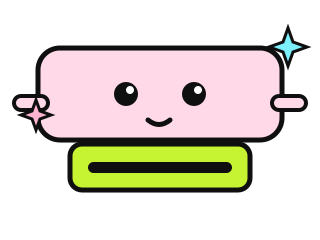

01
Subtitle ganda
Baris atas bahasa target, baris bawah bahasa ibu. Sinkron audio, klik per kata.
Tempel link atau unggah video. Immerse bikin subtitle ganda, membedah grammar di tabel transkrip, dan Mersi — asisten AI — siap menjelaskan setiap kata.
Nama Immerse + Mersi sementara · cek trademark sebelum rilis.

Baris atas bahasa target, baris bawah bahasa ibu. Sinkron audio, klik per kata.
Setiap kalimat dibedah: pola grammar, bentuk kata, level CEFR. Bukan sekadar terjemahan.
Film, podcast, kuliah, vlog. Tempel link atau unggah file — kamu pilih bahan belajarmu.
Tanya kenapa kalimat begini, minta contoh lain, latihan ulang — tanpa pindah tab.
Teman belajarmu yang tinggal di dalam video. Mersi menjelaskan grammar dengan konteks adegan, memberi contoh kalimat baru, dan mengoreksi latihanmu — dalam bahasa yang kamu pilih.
Mersi, kenapa pakai "would have" di sini?
Itu pola third conditional: menyesali hal yang tidak terjadi. Bandingkan: "I would call you" = masih mungkin. "I would have called" = sudah lewat.
Tanpa kartu kredit. 3 video pertama gratis.